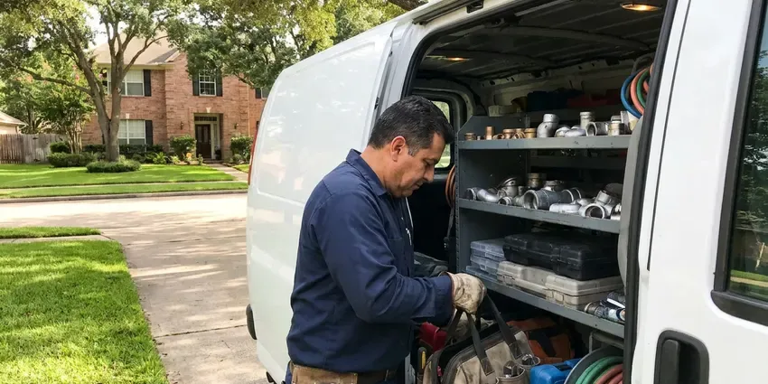

Basement Leak Repair in St. Cloud, MN
CNV Plumbing repairs basement leaks in St. Cloud, MN, from cracked drain pipes to wall seepage.
- Same-Day Leak Detection
- Long-Lasting Fixes
- Certified Plumbers
- Accurate Leak Detection

Need Basement Leak Repair in St. Cloud, MN?
Call CNV Plumbing for an inspection and a written estimate.
Professional Basement Leak Repair in St. Cloud, MN
CNV Plumbing handles basement leak repair in St. Cloud, MN with the plumbing and the drainage in one visit. Summer thunderstorms can drop intense rain in a short time, causing sewer backups in older neighborhoods. Storm water that cannot drain away from the foundation ends up pushing through the cove joint, the floor drain, or any crack it can find. We fix the path first.
Work we handle every week:
- Wall crack sealing with polyurethane or epoxy
- Moisture meter and thermal camera leak detection
- Interior perimeter drains for groundwater pressure

Additional Plumbing Maintenance Services in St. Cloud, MN
Our maintenance and specialty plumbing services in St. Cloud, MN protect your home year-round and extend the life of every system.


Customers
Why Choose CNV Plumbing for Basement Leak Repair in St. Cloud, MN?
Basement water is tricky because a plumbing leak, condensation and soil seepage can all look identical on a wet floor. Testing comes before any repair. A meter test shows whether water is moving through the pipes with every fixture off, a dye test shows whether a drain is leaking, and a foil square tells us whether the moisture comes from the room air.
- Code Compliant, Work follows the plumbing and building codes used in St. Cloud and Minnesota, and permits are pulled when needed.
- Lasting Repairs, Repairs are matched to Minnesota climate so water stays out year after year.
- Code Compliance, Every repair meets local code, with inspections scheduled when needed.
Citywide Coverage
Commercial lower levels around St. Cloud, like retail storage rooms and office basements, get the same testing. Early or late visits are available. Roof drain leaders and grease lines often leak unnoticed for months, so we check them too.
Experienced Team
Crews on our basement calls have fixed leaks behind drywall, under slab floors and inside crawl access panels. Access is half the job. We open the smallest hole that reaches the problem, protect the floor with drop cloths and plastic, and leave the opening clean and square so a drywall patch blends in.
Safety-First Approach
Mold is the safety issue people forget. Wet drywall can grow it in two days. Drywall and pad that stayed wet more than a day or two should come out, and we can refer a mitigation company.
Trusted Certified St. Cloud Plumbing Services Professionals
At CNV Plumbing, we take pride in licensed, certified plumbing services throughout St. Cloud, MN. Credentials matter in this trade. Our plumbers hold recognized industry credentials, and they follow strict safety and quality rules on every repair, installation and maintenance call we run.
Call Us Now PHCC Plumbing Contractor Recognition
PHCC Plumbing Contractor Recognition Better Business Bureau (BBB) Accreditation
Better Business Bureau (BBB) Accreditation Angi Certified Pro
Angi Certified Pro ISO 9001 Quality Management Certification
ISO 9001 Quality Management CertificationBasement Leak Repair Work in St. Cloud, MN
Basement Leak Repair Cost Comparison in St. Cloud, MN
A simple fitting or supply line repair usually costs $200 to $600. Drain stack repairs run $500 to $2,000 depending on access. Sump installs run $1,200 to $2,500, and perimeter drain systems cost several thousand more because of the concrete and digging. Prices vary with access.

Interior Drainage Systems in St. Cloud
Where digging outside is not practical, an interior drain system does the same job from inside. We cut the slab along the perimeter, lay perforated pipe in washed stone, and slope it to a new or existing sump pit before patching the floor with fresh concrete. The wall gets a dimpled membrane. Seepage runs down behind it and into the pipe.
Foundation Crack Repair in St. Cloud
Hairline cracks in a poured wall are common and often stay dry, but a crack that seeps after rain needs attention. Freeze and thaw movement can crack older sewer laterals, and tree roots often find their way into the joints. Polyurethane injection from the inside fills a leaking crack all the way through and flexes with the wall. Most injections take an hour or two.
Drain and Sewer Pipe Leak Repair in St. Cloud, MN
Cast iron drain stacks in older homes crack and scale from the inside out. A wet spot at the base of the stack or a crack along the hub is common, and we replace the damaged section with PVC or new cast iron joined with no-hub couplings. Plastic joints can fail too. A separated PVC joint usually means the pipe was not fully seated or not supported.
Exterior Waterproofing Solutions in St. Cloud, MN
Exterior waterproofing means digging down to the footing, cleaning the wall, and applying a membrane with a drainage board over it. It is the most thorough fix and the most disruptive one. Plan on several days. We bring in a waterproofing partner for the membrane and handle the footing drain and its tie-in to a sump or daylight outlet ourselves.
Supply Line Leak Repair in St. Cloud
Water lines along a basement ceiling tend to leak at fittings, valves and pinholes. Private wells are widespread, so homeowners around St. Cloud should test for hardness and iron before sizing a treatment system. We cut out the bad section and replace it with copper or PEX, and if we find more than two or three pinholes on one run, we recommend repiping that run instead of patching it again. Repiping a basement ceiling is usually a one-day job.
Waterproofing for Older Minnesota Homes in St. Cloud, MN
Older basements usually went in with block walls and little more than tar on the outside. Some older neighborhoods still have lead service lines, so replacing one is a smart move during other plumbing work. Water collects inside hollow block cores, and weep holes at the base let it drain into a perimeter channel. Clay tile drains fail too.

Water Damage Assessment in St. Cloud, MN
Before any repair, we figure out where the water came from and how far it spread. Moisture meters on drywall and baseboards show the wet area, and a thermal camera picks up cold spots where water is wicking behind the finish. Guessing costs money. We give you the readings and photos for your insurer.
Basement Leak Repair Near Me in St. Cloud, MN
Dispatch for basement calls in St. Cloud runs from our nearby shop, so most appointments land the same day or the next morning. A spraying pipe gets the next open truck. For slow seepage that only shows after rain, we may schedule the visit during wet weather on purpose, since a dry day often hides exactly the thing we need to see.
Local knowledge includes how the soil and storms around St. Cloud affect lower levels. Freeze and thaw movement can crack older sewer laterals, and tree roots often find their way into the joints. It gives us a good first guess about whether a wet wall is drainage or plumbing. Testing still confirms it.
CNV Plumbing at a Glance
- Fully licensed plumbing team covering St. Cloud, MN
- 24/7 emergency service with same-day scheduling
- Upfront, flat-rate pricing before work begins
- 4.8-star rated by 501+ Minnesota customers
St. Cloud Map
St. Cloud Information
- Population
- 71,013
- Area codes
- 320/763/952
- Service area
- St. Cloud and towns within a 40 mile drive
- Nearby
- Maple Grove, Coon Rapids, Plymouth, Brooklyn Park
Basement water in St. Cloud, MN can come from wet soil or corroded pipes. Private wells are widespread, so homeowners around St. Cloud should test for hardness and iron before choosing a treatment system. We test to find which one it is.
Expert Services
Call CNV Plumbing for honest, reliable plumbing from people who know the trade in St. Cloud, MN.
Our Specialized Plumbing Services in St. Cloud, MN
At CNV Plumbing, we handle the full list of plumbing services across St. Cloud, MN. From leak detection to full system installs, our team works fast and charges fair prices on homes and commercial properties alike. Here are the core services we offer:


How We Trace and Repair Basement Leaks in St. Cloud, MN
Our basement leak repair process begins with finding the source, not guessing.
Request a Quote
Contact CNV Plumbing at (612) 712-9569 to set up a visit. We ask a few questions about the water.
Source Tracing
We find the source and check how far the water spread. Photos go in your file.
Repair Plan
We explain the repair options in plain language and give a written price.
Frequently Asked Questions About Basement Leak Repair in St. Cloud
Price depends on the source. Fixing a leaking fitting or supply line is usually a few hundred dollars. Crack injection, sump replacement and interior drain systems step up from there, with full perimeter drains or exterior waterproofing reaching several thousand dollars because of the concrete work and digging. We quote after testing.
It depends on the scope. A small pipe or fitting repair generally does not. Replacing a drain stack, adding a sump discharge, installing a backwater valve or digging near the foundation may need one, and we check with the local building department and pull it before work starts so it does not hold up a sale later.
Look for damp spots on walls or floors, a musty smell, and white chalky deposits on concrete. Those deposits are efflorescence, left behind when water evaporates. Peeling paint low on the wall, rust on the water heater base, and a water bill that keeps creeping up with no change in use all point toward a leak worth testing. Smell often comes first.
Start outside. Clean gutters and push downspout discharge six feet or more from the wall. Make sure the soil slopes away from the house, test the sump pump each spring by filling the pit with a bucket of water, and insulate cold water lines that sweat in humid weather. Check the water heater yearly.
Check the base of the walls after a heavy rain. Damp bands low on the wall and water at the cove joint are typical. For plumbing leaks, turn off every faucet and appliance, then watch the water meter for 30 minutes, and if the dial or leak indicator moves, water is escaping somewhere in the system. Note where the water shows.
Plumbing leaks show up no matter the weather. Groundwater leaks track the rain. Turn off every fixture and watch the water meter, and if it still moves, the leak is in the pressurized lines, while water that only appears a few hours after a storm is almost always coming from outside.
Gutters and downspouts do most of the work. Keep them clear and extended well away from the foundation. Test the sump each spring and swap rubber washer hoses for braided ones every five years.
Crack repairs use two-part polyurethane or epoxy injection resin, depending on whether the crack is actively wet. Polyurethane handles wet cracks. Our interior drains use rigid perforated pipe, which keeps its slope and can be jetted later.
Hear From Customers Who Hired Our Plumbing Experts

Robert G.
The camera showed a full break in our clay sewer line near the street. CNV Plumbing replaced it with a trenchless pipe burst, so the only digging was two small pits in the yard. They let us watch the footage before and after.
Sewer Line Replacement · St. Cloud, MN
Jessica T.
We were adding a gas range in a kitchen remodel and needed a new line run from the meter. The plumber pulled the permit, ran the pipe through the crawl space, and had it inspected and approved within the week.
Gas Line Repair · Maple Grove, MNLaura S.
Our 40 gallon tank started leaking from the bottom after thirteen years. The tech hauled the old one out, set a new unit with a fresh expansion tank, and had hot water running in about four hours. He took the old tank with him too.
Water Heater Replacement · Coon Rapids, MN
Angela D.
Our sump pump quit during a storm and the water was an inch from the basement carpet. CNV Plumbing put in a new pump with a battery backup that same evening. We have had two heavy rains since. It kicked on both times.
Sump Pump · Plymouth, MNJames P.
Our restaurant had a slow leak at the hand sink that was rotting the cabinet base. CNV Plumbing came in at six in the morning before prep, replaced the trap and both supply lines, and was packed up before my first cook clocked in.
Commercial Plumbing · St. Cloud, MNPatricia H.
We had a slab leak that two other companies could not find. CNV Plumbing located it in under an hour with a listening device. They rerouted the line through the attic instead of breaking up the floor, so we kept our kitchen tile.
Slab Leak Repair · Blaine, MN